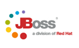

|
deGloba és una companyia de
consultoria i reingeniería de software especialitzada en el desenvolupament d'aplicaciones i/o serveis i el suport tecnològic dirigit a les empreses. | |
| L'objetiu de deGloba està marcat pel creixement dels sistemes rel.lacionats amb les tecnologies de la informació | |
deGloba és una compañía de
consultoría y reingeniería de software especializada en el desarrollo de aplicaciones y/o servicios y el soporte tecnológico dirigido a las empresas.
Basamos nuestra estrategia en
arquitecturas JEE
propietarias como .NET así como la utilización de
software libre
El objetivo de deGloba está marcado por el crecimiento de los sistemas relacionados con las tecnologías de la información
deGloba is a company of consulting and reengineering of software specialized in the development of applications and services and technological support directed to companies. | |
| deGloba's aim is marked by the growth of systems about information technologies | |
deGloba proporciona una solució OpenSource de WorkFlow utilitzant JBPM.
Suporta l'execució de processos/WebServices
Persistència de les execucions
suport de diferents llenguatges
Inclou una Consola Web per l'administració dels Processos de Negoci
El JBPM suporta Oracle, SQLServer i d'altres BBDD
Entorn "clusteritzat" i integrat amb la plataforma Jboss
deGloba proporciona una solución OpenSource de WorkFlow utilitzando JBPM.
Soporta la ejecución de procesos/WebServices
Persistencia de las ejecuciones
Soporte de diferentes lenguajes
Incluye una Consola Web para la administración de los Procesos de Negocio
El JBPM soporta Oracle, SQLServer y otras BBDD
Entorno "clusterizado" e integrado con la plataforma Jboss
deGloba provides an opensource solution of workflow using JBPM.
We support the process/WebServices executions
Persistence of executions
Support of diferents languages
It includes a Web Console for business process administration
JBPM support Oracle, SQLServer
Entorno "clusterizado" e integrado con la plataforma Jboss
A deGloba som conscients dels canvis en el món de les noves tecnologies. Aquests canvis, generalment, ens proporcionen una sèrie de millores en el nostre negoci a les que difícilment podem donar l'esquena
Arribar a un major nombre de clients finals.
Millorar la qualitat del servei que prestem als nostres clients.
Optimitzar els fluxos d'informació dins de la nostra própia organització.
Minimitzar els costos de gestió dels nostres aprovisionaments.
Incrementar la productivitat del nostre equip de vendes.
deGloba és consciente de los cambios en el mundo de las nuevas tecnologías. Estos cambios, generalmente, nos proporcionan una serie de mejoras en nuestro negocio a las que dificilmente podemos dar la espalda
Llegar a un mayor numero de clientes finales.
Mejorar la calidad del servicio que prestamos a nuestros clientes.
Optimizar los flujos de información dentro de nuestra propia organización.
Minimizar los costes de gestión de nuestros aprovisionamientos.
Incrementar la productividad de nuestro equipo de ventas.
deGloba is conscious of changes in the world of the new technologies. These changes, generally, it provides us a series of improvements in our business which difficultly we can give the back
Come to a major number of final clients.
Optimize the quality of service que prestamos to our clients.
Optimize the flows of information inside our company.
Minimize the costs of management of our supplies.
Increase the productivity of our sales team.
deGloba té clients com organismes públics i empreses privades.
El nostre més gran repte ha sigut donar les millors solucions tecnològiques als nostres clients per satisfer les seves necesitats.
A deGloba el nostre objectiu és la qualitat del servei, aprofitant l'experiència i coneixements adquirits al llarg dels anys.
deGloba tiene clientes como organismos públicos y empresas privadas.
Nuestro mayor reto ha sido dar las mejores soluciones tecnológicas a nuestros clientes para satisfacer sus necesidades.
deGloba tiene como objetivo la calidad del servicio, aprovechando la experiencia y conocimientos adquiridos a lo largo de los años.
deGloba has clients like public organisms and private companies.
Our major challenge has been doing the best technological solutions to clients for satisfy their needs.
deGloba has like aim the quality of service, using the experience and knowledge acquired in years.
deGloba proporciona suport a solucions openSource per resoldre problemes d'integració de sistemes mitjançant solucions/implementacions basades en arquitectura SOA
ESB Mule JbossESB ServiceMix GlassFish - OpenESB Mule JbossESB ServiceMix GlassFish - OpenESB
|
Rules Drools |
BPM jBPM |
deGloba proporciona soporte a soluciones openSource para resolver problemas de integración de sistemas mediante implementaciones basadas en arquitectura SOA
|
ESB JbossESB Mule ServiceMix GlassFish - OpenESB
|
Rules Drools |
BPM jBPM |
deGloba provides support in opensource solutions to resolve integration problems of systems mediante implementaciones basadas en arquitectura SOA
|
ESB JbossESB Mule ServiceMix GlassFish - OpenESB
|
Rules Drools |
BPM jBPM |
|
 |
 |
 |

|
 |
|
 |
|
deGloba té clients com organismes públics i empreses privades.
El nostre més gran repte ha sigut donar les millors solucions tecnològiques als nostres clients per satisfer les seves necesitats.
A deGloba el nostre objectiu és la qualitat del servei, aprofitant l'experiència i coneixements adquirits al llarg dels anys.
deGloba tiene clientes como organismos públicos y empresas privadas.
Nuestro mayor reto ha sido dar las mejores soluciones tecnológicas a nuestros clientes para satisfacer sus necesidades.
deGloba tiene como objetivo la calidad del servicio, aprovechando la experiencia y conocimientos adquiridos a lo largo de los años.
deGloba té clients com organismes públics i empreses privades .
El nostre més gran repte ha sigut donar les millors solucions tecnològiques als nostres clients per satisfer les seves necesitats.
A deGloba el nostre objectiu és la qualitat del servei, aprofitant l'experiència i coneixements adquirits al llarg dels anys.
deGloba tiene clientes como organismos públicos y empresas privadas.
Nuestro mayor reto ha sido dar las mejores soluciones tecnológicas a nuestros clientes para satisfacer sus necesidades.
deGloba tiene como objetivo la calidad del servicio, aprovechando la experiencia y conocimientos adquiridos a lo largo de los años.
L'Arquitectura Orientada a Serveis és un concepte d'arquitectura de software que defineix la utilització de serveis.Permet crear i modificar els processos de negoci de forma simple.
La majoria de les definicions de SOA identifiquen la utilització de Serveis Web (mitjançant SOAP i WSDL) en la seva implementació.
La Arquitectura Orientada a Servicios es un concepto de arquitectura de software que define la utilización de servicios.Permite crear y modificar los procesos de negocio de forma simple.
La mayoría de las definiciones de SOA identifican la utilitzación de Servicios Web (mediante SOAP y WSDL) en su implementación.
The Architecture Orientated to Services is a concept of software architecture which defines using of services.It allows to create and to modify the processes of business of simple form.
The majority of SOA's definitions identify the utilitzación of Web Services (by means of SOAP and WSDL) en his implementation.
deGloba proporciona solucions a sistemes de gestió, administració i creació de coneixement mitjançant l'anàlisi de dades existents en una organització o empresa.
deGloba proporciona soluciones a sistemas de gestión, administración y creación de conocimiento mediante el análisis de datos existentes en una organización o empresa.
deGloba provides solutions to systems of management, administration and creation of knowledge by means of the analysis of existing information in an organization or company.
El resultat de la reingenieria es medeix per la disminució dels costos i l'augment de la quantitat de productes i/o serveis que s'ofereixen en el mateix temps amb la mateixa quantitat de recursos.
El resultado de la reingeniería se mide por la disminución de los costos y el aumento de la cantidad de productos y/o servicios que s'ofrecen en el mismo tiempo con la misma cantidad de recursos.
The result of the reengineering measures up for the decrease of the costs and the increase of the quantity of products and / or services that offer in the same time with the same quantity of resources.
El nombre de solucions en forma de software lliure es infinit.
Varies solucions per diferents serveis : LDAP, BBDD, CRM, CMS, Servidor Web, Servidor Correo, Servidor Aplicacions
Els sistemes basats en software lliure proporciona a les empreses una reducció de costos al mateix temps que una qualitat del software comparable a la dels productes propietaris
El número de soluciones en forma de software libre és infinito.
Varias soluciones para diferentes servicios : LDAP, BBDD, CRM, CMS, Servidor Web, Servidor Correo, Servidor Aplicaciones
Los sistemas basados en software libre proporciona a las empresas una reducción de costos al mismo tiempo que una calidad del software comparable a la de los productos propietarios
The number of solutions in the shape of software free is infinite.
Several solutions for different services: LDAP, BBDD, CRM, CMS, Web Servers, mail server, Applications servers
The systems based on free software it provides to the companies a reduction of costs at the same time as a quality of the software comparable to that of the proprietary products
|
.NET és la plataforma Microsoft especialment pensada per donar resposta a qualsevol problema tecnològic |
|
|
|
|
|
J2EE és la plataforma Java especialment pensada per donar resposta a qualsevol problema tecnològic |
|
|
|
|
|
.NET és la plataforma Microsoft especialmente pensada para dar respuesta a cualquier problema tecnológico |
|
|
|
|
|
J2EE és la plataforma Java especialmente pensada para dar respuesta a cualquier problema tecnológico |
|
|
|
|
|
.NET is the platform Microsoft specially thought to give response to any technological problem |
|
|
|
|
|
J2EE is the platform Microsoft specially thought to give response to any technological problem |
|
|
|
|
Conceptes de Plataformes SOA
 Integració amb la infraestructura existent
Integració amb la infraestructura existent